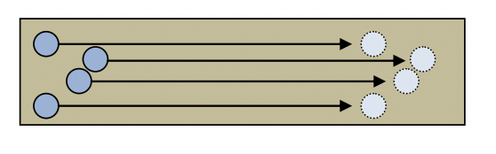
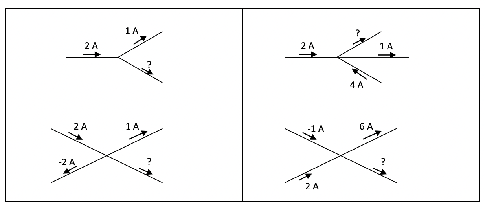

electric charge
- electric charge is a property of matter
- some particles have a positive charge, some have negative, and some have a neutral (no) charge.
- how do the forces between electric charges work?
- like charges repel, opposite charges attracts.
- size of the force will be equal but opposite.
- extension of newtons 3rd law.
- how do the forces between electric charges work?
- measured in coulombs (C) and is given the symbol
- charge cannot be created or destroyed, but can transfer from 1 location to another.
- this can be done by applying friction.
- e.g. comb rubbing through dry hair, this will create friction, and provides necessary work to transfer the electrons from one object to another.
- when comb is removed, it will be negatively charged.
- when hovered over a neutral piece of paper, electrons are pushed away from the paper and the protons are pulled to create an attractive force.
- attraction force that exist is stronger than the repulsive force that exists.
- an insulator is a material that does not allow charges to move around it.
- conductor allows electric charge to accumulate on the surface of the object, and electric charge tends to exist on the surface of the object; like charges repel.
behaviour of charged particles
- particles have property called charge
- charge can be positive, negative or neutral.
- usually charge is balanced out perfectly.
- when significant numbers of these charged particles become separated or move relative to each other, it results in electricity.
- tiny particles are called atoms
table of charge and repel/attraction of other charges
| charge | positive | negative |
|---|---|---|
| positive | repel | attract |
| negative | attract | repel |
measuring charge
- in order to measure the actual amount of charge, a ‘fundamental’ unit would be the size of the charge on one electron/proton.
- coulomb (symbol C) unit of charge.
- +1 coulomb (1 C) is equivalent to protons.
- charge of single proton is
- charge of single electron is
- the letter q is used to represent the quantity of charge.
van de graaff
- uses friction of a conveyer belt to accumulate an electric charge on the metal dome.
- transfer of a charge. electrons move from one object to another.
- (not entirely sure which way they move, nor does it matter)
- lets say the electrons jump from conveyer belt to metal dome
- development of electric charge on the surface of the drone
- high electric charge | static charge within the dome.
- transfer of a charge. electrons move from one object to another.
- repulsion
- when the dome develops overall charge and a person plays their hand on the dome, the dome wants to get rid of its charge. Charges will spread around your body, like charges repel, therefore your hair will stand up on end.
- light hair -> pushes away from the body and each other / repulsive force
- static discharge
- sparks
- if the amount of charge is great enough and the distance is small enough, the air will be ionised.
- this creates a channel for the charges to jump to another location, causing a visible spark (static shock)
- if the charge is great, but there is nowhere nearby to jump to, the charge will gradually “leak” out the surrounding neutral air.
- sparks
electric current
- an electric current is the flow / movement of electric charge.
- it is measured in Amperes (A) and given the symbol I
- current is measured with a device called an ammeter.
- -ve charges more to the left current (I) is moving to the right.
- I = q/t (charge (c)/ time (s))
- in physics, we define the +ve direction of current as the direction that +ve charges flow (called conventional current)
- since current is the movement of electric charge, connected with the movement of physical particles, it must be a conserved quantity, the charge carried always have to somewhere.
- no. of +ve particles at location 1 = no. of +ve particles at location 2 (no chance for +ve charge to leave wire)
- due to conservation of charge.
example problem:
- how many electrons flow through the ammeter in 3.5min?
- I1 = 70mA = 0.07A
- q = It = 0.070 _ 3.5 _ 60 = 14.7
- no of e = 14.6/1.6x10^-19 = 9.19x10
electric fields
- a drawing of the force experienced by a hypothetical, positive ‘test charge’ when placed near a charged object.
- field lines go from positive to negative.
- positive charges travel in direction of arrows, negative charges travel in the opposite direction.
- field lines do not cross.
- field lines are evenly spread.
- the closer the field lines, the stronger the electric field.
example - point charge
- point charge is electrical charge (usually a particle) which we assume has zero radius i.e. electrons.
example 2 - spherical charges
- identical to point charges, these usually have a charge evenly distributed on their surface to produce a radial electric field.
example 3 - charged plates
- electric charges are distributed evenly along the plates. the field between the plates is evenly distributed in parallel lines but the ends are bowed.
coulombs law
- force between two point charges placed in proximity to each other can be determined using coulombs law:
- F = the force between the charges (N), r = the distance between the two charges
- indicates direction of the force.
- positive value indicates two like charges or a force of repulsion.
- negative value indicates opposite or a force of attraction.
- = the first charge (C)
- = the second charge (C)
- = coulomb constant
- = distances of separation
electrical potential energy
- potential energy is ‘stored’ energy which has the capacity to do work which typically arises because of the position of objects or particles.
electrical potential
- not the same as EPE.
- electrical potential is the amount of potential energy per unit of charge (per coulomb) i.e. total amount of electrical potential energy for 1 coulomb
- because of the attraction of the particles, they might start to fall towards the plate.
- charge particles will naturally (and desire to) move from a high potential to a low potential.
- we can do opposite by putting energy into particles, making them move away. you need energy to increase your potential 1V to 3V requires v = 2V.
potential difference
- potential difference (or voltage) is measured using voltmeter.
- a potential difference must be measured by two different locations on a circuit.
- will exist if the charge particles gain potential energy (battery) or lose potential energy (light gloves, resistors, speakers etc.)
emf
-
an electromotive force (emf) is another term for a “potential difference” when the charged particles are being supplied with electrical potential energy (instead of losing potential energy)
-
an emf is formed through the separation of oppositely charged particles; in a battery this is achieved by using one chemical that craves electrons and another that is happy to release them.
-
an emf will drive an electric current around a closed circuit. the charged particles will naturally move to a lower potential as they are attached to the opposite charge on the far side of the circuit.
Note
energy in = energy out
-
12.0 -> 8.5 over 12s
summary
- the EMF supplies charged particles with potential energy
- the EMF drives the charged particles around a closed circuit
- the charged particles lose potential energy as they flow, converting it to heat, light, sound, etc.
- energy is conserved during these transformations.
power
- power is the rate of change
- P (watts W) = E/t (energy (J)/time (s))
- since I = q/t, P = vq/t = VI | power = voltage x current
resistance
- resistance of a circuit element increase when:
- length is increased: electrons interactions with protons is increased as they need to take a longer path to reach the other side
- diameter is reduced: amount of paths available for delocalised electrons to move through.
- temperature is increased: as electrons try to move through, increasing temperature results in higher kinetic energy meaning protons moving/vibrating more rapidly. Electric fields then have more influence on the electrons.
- resistivity of material is larger: part of the intrinsic behaviour iron -> copper -> silver
energy loss in a resistor
- when a current flows through a circuit element with a resistance, a potential difference will exist across that element (Ohm’s law) V = IR.
- a potential difference is a measure of the drop in ‘potential energy per coulomb’
- as a current flows through a resistor, there needs to be a change in energy of the charged particles that are flowing through.
- this is confirmed using a voltmeter that will measure that there is a potential difference.
where will this energy go?
- a current flowing through a resistive element will produce heat. This might be desirable, or simply a form of wasted energy.
- transfer of kinetic energy (movement of particles)
- e.g. toaster -> drive a current through a metal bar -> current due to resistance will release heat energy.
V-I profiles (HELPFUL FOR INVESTIGATION)
- when we analyse different circuit components, looking at the voltage-current profile, it helps us explain a particular component of the circuit.
- as we increase the voltage, the amount of current flowing through that element will also increase.
- in a resistor, this will provide a linear relationship.
 (ohmic resistor graph)
(ohmic resistor graph) - we can figure out the gradient if we analyse the graph.
- gradient = rise/run = change in current/change in voltage = I/V (ohms law flipped!!!)
- I/V is flipped ohms law, therefore, Resistance = 1/gradient.
- indicate points CLEARLY on the graph!!!!!!!!!
- in a resistor, this will provide a linear relationship.
- in a voltage current profile for a resistor, the resistance = 1/gradient, the gradient is constant and therefore the resistance of the resistor is also a constant, therefore the resistance of the resistor is also a constant value - ohmic conductor.
- non-ohmic conductor
- a globe is not ohmic. Their resistance changes with respect to the voltage that is placed across them.
- if the resistance is 1/gradient and the resistance is changing, then the gradient is changing.
- non-ohmic device can be identified from its voltage current profile, as the gradient will NOT be constant.
kirchhoffs laws
- kirchhoffs current law (KCL)
- the sum of the currents flowing into a junction is equal to the sum of the currents flowing out.
- 4 things to think abt when looking at diagram (referring to series circuit):
- ohms law
- kirchhoffs voltage law
- kirchhoffs current law
- equivalent resistance
5.3 electric current and circuits
- electrical circuit is a path made of conductive material, through which charges can flow in a closed loop.
- movement of electrons is called electron flow.
Charge and Current: Problems Worksheet
- Object X is known to have a net positive charge. Through experimentation the following was observed:
- Object X attracts object Y
- Object Y repels object Z a. Explain, using the our current understanding of the atom, how object X could have gained a positive net charge.
- by having more protons that electrons b. Object X is placed near object Z. Would these two objects attract or repel each other?
- attract, because Object Y and Z have the same charge (since they repel each other), and object Y is attracted to object X (opposite charges), so object Z and X have opposing charges (attracting each other) c. When object X is placed near object Y it loses its net positive charge. Suggest the most likely reason why this occurs.
- because the net positive charge is counteracted by an equally negative charge.
- After moving around on carpet in socks, Jane reaches for a door knob and receives a static shock a. Describe the physics behind the cause of a static shock.
- Jane has a net negative charge because her body collected electrons, and the electrons are released when she touches the door knob. b. Explain how the conditions required for Jane to be shocked occurred.
- metals conduct electricity, and the electrons stored in your body by collecting the electrons on the carpet is conducted by the metal doorknob, and felt as a “static shock”. c. On the diagram above, draw the charge distribution of Jane’s hand and the door knob just prior to the shock occurring (be careful with the ratio of positive and negative charges drawn). Erm
- During a Van der Graff demonstration the metal dome builds up a large positive charge. The teacher places a single aluminium pie plate on top of the dome. After a while the pie plate flies off. Explain the cause behind the pie plate flying off.
- the charge
- Rubbing a balloon against dry hair allows the balloon to temporarily stick to a wall. Explain, using the diagram to assist, why the balloon sticks.
- The charge of several objects was recorded into a table. This table is shown below.
| object | charge (C) |
|---|---|
| object A | |
| object B | |
| object C | |
| object D |
Which object did not have its charge measured accurately? Justify your choice.
- Calculate the current that flows through a copper wire when 20.0 mC of negative charge passes a point in the wire within s.
- How many electrons would flow through a wire over a 2.00 minute period if the current in the wire was a steady 30.0 mA?
- The material in the diagram below has mobile charges that move from the left hand side to the right hand side of the material. a. Which direction is the current if these mobile charges are positive? b. Which direction is the current if these mobile charges are negative? c. If two of the mobile charges were positive and the other two were negative, explain whether or not a current is flowing in the material.
- Write in the current flowing through the electrical wire indicated by the ”?” in each diagram below. a. 1A b. 5A c. 3A d. -5A
- Explain why silver and copper conduct electricity while rubber and plastic insulate again the flow of electrical current.
- the electrons in plastic and rubber are very tightly bound to their respective nuclei and cannot readily move from one atom to another. Non-metals do not conduct electricity very well and are known as insulators. Meanwhile silver and copper the outermost electrons are only very slightly attracted to their respective nuclei. As a consequence, metals are good conductors of electricity. In conductors, loosely held electrons can ‘jump’ from one atom to another and move freely throughout the material.
know absolute and percentage uncertainty for the test ^_^